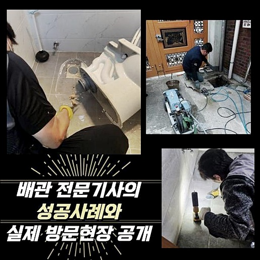
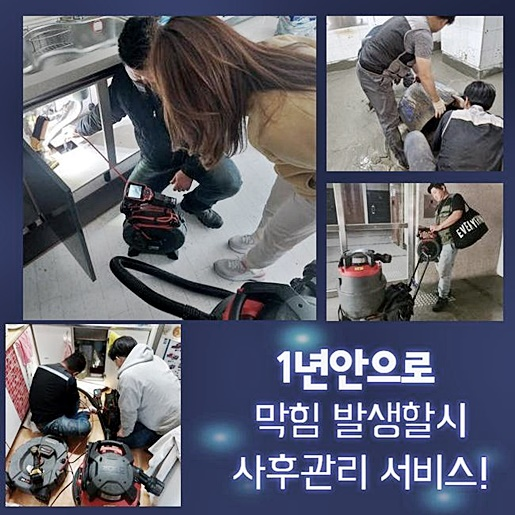
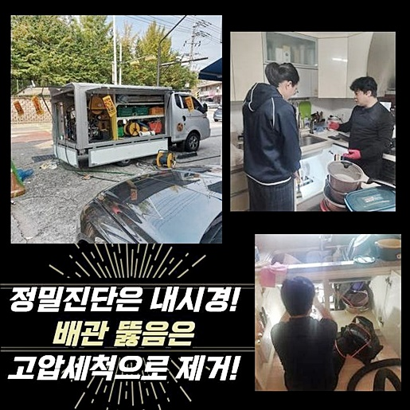
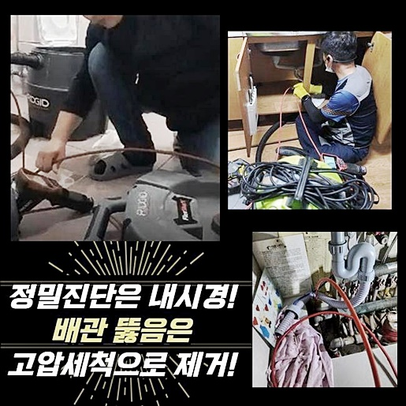
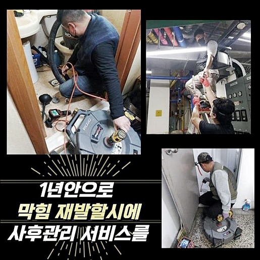
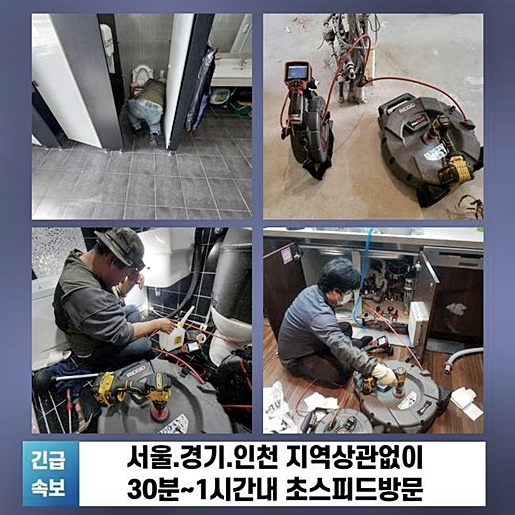

🏠 중앙동화장실뚫음 초평동 오수맨홀청소 설비
용인시 처인구 배관막힘 전문 시공 후기

📋 작업 개요
- 위치: 용인시 처인구, 수원시 영통구, 화성시 동탄
- 서비스 유형: 배관막힘, 고압세척, 내시경점검
- 작업 일시:
- 업체명: 하수구수사대 (010-5615-2118)
🔍 문제 상황
중앙동화장실뚫음 초평동 오수맨홀청소 설비
종종 의뢰자님들께서 다양하게 하수가 역류해서 저희를 찾아주고계세요
이번주엔 일상 속에서 역류 현상으로 불편함을 느끼셨던 한 가족의 해결과정을 공유해드릴게요
의뢰자분께서 자택 배관에서 배수가 막히게되어 흐름이 없다고 연락해주셨어요
옷 세탁을 위해 사용하게 될때마다 구정물이 솟아올라 흘러내린다고 말씀해주셨어요
물막힘의 연유를 찾아낸 뒤 불편함을 겪고 계신 사항을 바로 해결하고자 곧장 고객님의 집으로 도착했습니다
고객님댁에 도착한 뒤 베란다의 배수구들을 확인해 보았더니
연락을 통해 말해주신 것처럼 세탁기쪽의 배관이 막혀진 상태로 불편을 겪고 계신 모습을 확인할수 있었어요
진입부에 바깥으로 나온 기름 덩어리도 흐르고 있었어요
막힌곳을 뚫는 석션기계를 이용하여 오수가 고여있는 부분을 빨아내 제거한 뒤에
발코니 위치의 배관에 쌓여있는 부유물도 한번 제거하였습니다
가끔씩 생기는 단조로운 문제들은 힘센 석션장비로 증세가 해결되요

🔎 원인 분석
💡 전문가 진단: 정밀 진단 장비를 사용하여 슬러지의 고착 여부를 판명하고 타격/세척 작업을 실시했습니다.
여러회차 석션 작업 후 적은양의 하수를 쏟아내주고 체크해 보았더니
잠깐동안은 하수가 흘러서 내려간것 같더니 대번에 다시금 물들이 일정높이에 다다라 올랐습니다
이번건과 같은 케이스는 복잡하지 않은 막힘이 아니더라구요
하수구가 막혀버린 곳을 볼수있는 전문기계인 내시경기기를 사용해서 물막힘이 발생한 문제원인을 찾아보기로 했습니다
내시경카메라는 크기가 작고 유연성이 뛰어나며 맨앞부분에 카메라렌즈가 있는 기계로 보통 건강검진시에 사용하게되는 대장내시경장치와 동일한 기계로서
직접적으로 확인할수 없는 배관의 안쪽 증세를 확인하기 위해 사용해요
내시경을 삽입한뒤 배관 속을 관찰해보니 LCD모니터 화면을 보니 잔해물과 머리카락 등이 온갖 오염물의 모습이 확인할수 있었습니다
물이 흐르는 곳까지 좁아진 상태로 있었지만 문제가 되는 만큼은 아니에요
내시경장비를 안쪽으로 가용시켜 꺾여있는 배관내부 안쪽까지도 확인해봤어요
주방에있는 싱크대의 배수관과 맞닿는 장소에서 잔해들이 탐지된걸 볼수있었어요
싱크볼에서 배관을 연결할때 꾸준히 쓰게되는 주름관에서 부서진 조각들이 깊숙한 곳까지 들어가 있는 모습을 보았어요
배수구 거름망들을 관통할 사이즈는 아니었지만 주방싱크를 시공하면서 작은 자재들은 분리하여 처리하지않고 버려 버린것 같아요

🔧 작업 과정
부서진 자재들과 잔해들이 마찰이 생기면서 압이 높아지며 배관의 내부까지 상처를 받게되면 깨지게 되는 일도 있어요
세탁기가 있는 곳과 싱크대의 배수관과 하나로 되어있어 오물찌꺼기로 배수관 내부 속 안쪽도 작아져서 동시다발적으로 물을 사용하면 역류현상이 생길수밖에 없어요
샤프트기기를 가용시켜 세탁기가 있는 곳과 배관청소를 하게되었습니다
샤프트장치는 모터랑 체인이 연결된 스케일링 기계로서 모터들을 작동하면 앞쪽에 달려있는 사슬형태가 회전하는 도구입니다
헤드체인노커라는 사용되는 쇠로 만들어진 사슬들의 회전되는 모습으로 가득차 있는 부분을 걷어내서 배관세척이 수월하게 이뤄져요
샤프트를 작동 진행해 주면서 내시경을 함께 운용하여 잔해가 제일 많은 곳 먼저 타겟하여 작업을 진행하였어요
사이사이 하수를 부으면서 고착물 제거작업을 하였습니다
분쇄된 오물과 남아있는 기름은 석션기계를 투입해 빨아들여 빼냈습니다
청소를 하던중 의뢰자분께서는 싱크대의 연결관이 어쩌다 청수관 내부로 들어간 연유를 알수없다하시며 이야기 하셨습니다
과거에 리모델링을 진행하면서 작업하는 사람들의 잘못으로 이런 결함이 발생했을 이유가 있다고 얘기해드리니 당황하셨어요
우리들은 고객님들께 예측불가능한 오염물이 물막힘이 발생한 원인이 발생되는 사안을 안내를 해드리면서 꾸준히 생길수있는 일이라고 안내하였습니다
그리고 저희의 작업자들은 흡사한 작업들을 자주하면서 문제점을 해결하였다고 전달해드렸어요
싱크대의 배관위치의 물막힘이 발생했던 싱크의 배관조각을 꺼내보니 호스조각의 크기또한 예상보다 커서 하수관을 막히게 할수있다고 보게되었습니다
이런 잔해들로 배수관이 막히는 일이 발생되며 거실 세탁실과 싱크대의 배수관들이 서로 통하여 동시다발적으로 물을 쓸때마다 내려가지않고 역류현상 증세가 발현된것으로 확인되었습니다
해결이 되니 고객분께서도 걱정이 없으시다고 얘기해 주시네요
주방싱크대 배관을 뚫고 배관속에서 꺼내었던 이물들의 모습은 생각보다 많았었어요
저희 전문진은 오물은 분리하여 분리해서 물은 변기통에 버리며 건더기로 되어있는 쓰레기는 저희가 직접 자취없이 정리해주었습니다
문제점을 정리한뒤 주방싱크대를 점검해보았습니다
세탁기가 있는 곳 또한 배수테스트를 진행하니 오수가 문제없이 빠지는걸 보았습니다


✅ 작업 완료
배관막힘이 있을때 있었던 문제들도 보여지지 않는것을 확실하게 테스트 후에 고객님댁 내부를 마무리 정리를 한뒤에 기기를 모두 챙긴뒤 복귀진행했습니다
갑자기 하수구에서 하수가 정상적인 모습으로 안빠지는 증상이 생기거나 역으로 분출되는 등 미심쩍은 사안이 생겼을 때에는 빠르게 기술자에게 연락주시는것이 가장 좋은 방법이에요
현장들에 따라 문제점 제거 작업과 조치로 이상사태를 해결할 수 있기 때문입니다
저희의 경우 여러분들 모두가 피해없이 평범한 하루를 보내길 바라며 하루빨리 오차없이 문제들을 바로잡아 드릴수있습니다
언제나 요청주시면 신속하게 확실하게 해결책을 제공해 드릴수있습니다 고맙습니다!



⚠️ 하수구 배관 막힘 예방 및 관리 가이드
- ✅ 머리카락, 비닐, 물티슈 등 물에 분해되지 않는 이물질은 절대 흘려보내지 마세요.
- ✅ 기름기 많은 식기는 설거지 전 키친타올로 먼저 기름때를 닦아내세요.
- ✅ 주기적으로 배수구에 뜨거운 물을 가득 부어주어 유지방 고착을 방지하세요.
- ✅ 작업 후 1년 이내 재발 시 무상 A/S 보증 서비스를 제공합니다.
💡 핵심 정리
- 확실한 장비 작업(내시경 점검 및 샤프트 스케일링)으로 원인을 뿌리 뽑습니다.
- 작업 후 1년 이내에 동일한 부위 재발 시 100% 무상 A/S 서비스를 보장합니다.
- 서울 · 경기 · 인천 전 지역에 24시간 언제든 긴급 출동할 수 있도록 항시 대기 중입니다.
❓ 자주 묻는 질문 (FAQ)
🚨 용인시 처인구 배관막힘 문제로 고민이신가요?
정확한 원인 진단과 확실한 시공으로 재발 없는 해결을 약속드립니다.
24시간 긴급 출동 | 서울 · 경기 · 인천 전지역 | 1년 내 재발 시 무상 A/S